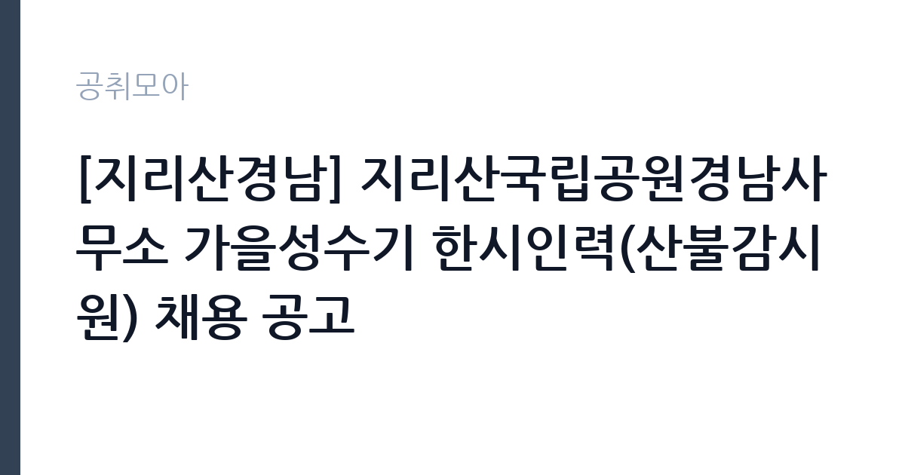

[공공기관] [지리산경남] 지리산국립공원경남사무소 가을성수기 한시인력(산불감시원) 채용 공고
국립공원공단 지리산국립공원경남사무소 · 경남 · 마감 2026-11-03 (D-6) · 출처 나라일터

한눈에 보는 모집 조건
| 기관 | 국립공원공단 지리산국립공원경남사무소 |
|---|---|
| 공고명 | [지리산경남] 지리산국립공원경남사무소 가을성수기 한시인력(산불감시원) 채용 공고 |
| 고용형태 | 일용직 |
| 근무지 | 경남 |
| 게시일 | 2026-10-28 |
| 마감일 | 2026-11-03 (D-6) |
지원자격, 이렇게 읽으세요
- 산불감시원(하동분소) 1명 산불감시원(함양분소) 1명 산불감시원(산청분소
- 접수 ~2026-11-03 마감
- 세부 조건은 원문 공고문 확인
일용·단기 근로는 정해진 사업 기간이나 단기 업무를 위해 채용되는 형태입니다. 근무 일수와 일당이 정해지고 사업 종료 시 근로관계가 끝납니다. 계절 사업이나 행사 지원, 단기 대체 인력으로 활용되는 경우가 대표적입니다. 이번 공고는 국립공원공단 지리산국립공원경남사무소가 직접 진행하는 자체 전형입니다. 산불 대응 직무는 체력과 건강 상태를 가장 중요하게 봅니다. 등짐 장비를 메고 산을 오를 수 있어야 하므로, 채용 단계에서 체력검정이나 신체검사를 실시하는 경우가 많습니다. 운전면허 소지자를 우대하거나 필수로 요구하는 공고가 일반적입니다. 산림 관련 자격이나 학과 전공은 우대 사항이며 필수는 아닙니다. 결격사유와 연령 기준은 공고문에 명시되어 있으므로 원문을 확인해야 합니다. 제출서류는 공고문에 적힌 순서대로 정리하면 담당자가 확인하기 쉽습니다. 동일 직무 경력자와 경쟁하게 되므로, 관련 경험이 있다면 증명서에 업무 내용이 구체적으로 적히도록 요청하십시오. 자격증은 유효 기간과 등록 상태를 확인해야 합니다. 갱신이 필요한 자격이라면 갱신 여부를 먼저 점검하십시오.
이 공고의 포인트
이 건은 국립공원공단 지리산국립공원경남사무소가 같은 시기에 낸 2개 모집분야 가운데 산불 대응 직무입니다. 다른 직무 공고와 요건이 다르므로 지원 전에 모집분야 표를 대조해야 합니다. 이 공고의 첫 번째 포인트는 고용 형태입니다. 사업 기간에 맞춰 채용되므로 근무 일수와 보수가 비교적 명확합니다. 대신 다음 근무지를 별도로 구해야 합니다. 두 번째는 업무 범위가 명확하다는 점입니다. 산불 대응 직무로 채용되므로 배치 이후 담당 업무가 크게 흔들리지 않습니다. 세 번째는 근무지입니다. 경남 지역 근무로 수도권 공고에 비해 지원자 분포가 넓지 않아 상대적으로 경쟁이 분산되는 경우가 있습니다. 자격 요건이 까다롭지 않은 대신 지원자가 몰리는 유형의 공고입니다. 다만 선발 인원이 1명으로 많지 않아 자격을 갖춘 지원자가 몰리면 경쟁률이 높아질 수 있습니다.
전형은 어떻게 진행되나
채용 절차는 공고문에 안내된 순서대로 진행되며, 서류 접수 마감 후에는 추가 접수나 서류 보완이 이뤄지지 않는 것이 원칙입니다. 서류심사에서는 응시자격과 제출서류의 형식 요건을 기계적으로 확인하므로, 경력 증명서의 기간과 직무 내용이 공고의 요건과 정확히 맞아야 합니다. 면접은 지원자 수에 따라 집단면접과 개별면접으로 나뉘고, 직무 관련 질문과 상황 대응 질문이 함께 나옵니다. 합격자 발표는 개별 통보 또는 홈페이지 게시로 이뤄지며 이후 임용 절차가 진행됩니다. 결과 발표는 문자와 이메일로 동시에 이뤄지지 않는 경우가 있어 두 경로를 모두 확인하십시오.
원문에서 확인한 전형 방식
지리산국립공원경남사무소 공고 제2026-44호 지리산국립공원경남사무소 가을성수기 한시인력(산불감시원) 채용 공고 지리산국립공원경남사무소에서 함께 근무할 가을성수기 한시인력(산불감시원) 직원을 채용하고자 합니다. 2026년 10월 28일 국립공원공단지리산국립공원경남사무소장 1. 채용분야 및 근무(예정)기간(공개경쟁) ㅇ 하동분소(하동군): 1명(2026. 11. 9. ~ 2026.12.20.) ㅇ 함양분소(함양군): 1명(2026. 11. 9. ~ 2026.12.20.) ㅇ 산청분소(산청군): 1명(2026. 11. 9. ~ 2026.12.20.) ㅇ 삼장분소(산청군): 1명(2026. 11. 9. ~ 2026.12.20.) 2. 접수방법: 우편 또는 방문접수 ㅇ 주소: 경남 산청군 시천면 남명로 376 지리산국립공원경남사무소, 행정과 인사담당자 3. 전형일정 ㅇ 응시원서 접수기간: 2026. 10. 28.(수) ~ 11. 3.(화) 18:00까지 ㅇ 직무적합성 심사: 2026. 11. 4.(수) ~ 11.5.(목) ㅇ 최종합격자 발표: 2026. 11. 6.(금) ㅇ 근로계약 체결: 2026. 11. 9.(월) [첨부] 1. 채용 공고문 1부. 2. 지원서
이런 분께 추천해요
- 장시간 산행과 중량 장비 운반이 가능한 체력을 가진 분
- 야간·휴일 현장 투입에 동의할 수 있는 분
- 지시 체계와 안전 수칙을 지키는 것을 우선하는 분
지원 전 체크리스트
- 응시자격 요건과 경력 기준을 충족하는가 — 경력은 증명서로 입증해야 합니다
- 근무 기간과 일당·월급 지급 방식을 확인했는가
- 제출서류 목록을 모두 준비했는가 — 누락 시 서류 단계에서 탈락합니다
- 접수 마감 2026-11-03 이전에 접수 방식을 확인해 제출했는가
모집 일정과 제출 타이밍
접수 마감은 2026-11-03이고 공고는 2026-10-28에 게시되었습니다. 준비 기간 6일 안에 서류 작성, 증빙 발급, 접수를 모두 마쳐야 하므로 주말을 포함해 일정을 미리 나누는 것이 좋습니다. 특히 경력 기술서나 직무수행계획서를 요구하는 공고는 작성에 시간이 걸리므로 첫날 초안을 잡으십시오. 서류 합격자 발표와 면접 사이 간격이 짧은 경우가 많아 면접 예상 질문은 서류 제출 전에 정리해 두는 편이 유리합니다. 마감 직전에는 접속이 몰리므로 여유를 두고 제출하십시오. 마감 이후에는 어떤 사유로도 접수가 인정되지 않으므로 하루 전 제출을 목표로 하십시오.
직무 이해하기: 공공기관
국립공원공단은 전국 국립공원을 관리하는 공공기관입니다. 각 사무소는 탐방로와 야영장, 안내 시설을 운영하고 자연 자원 보전과 이용객 안전을 담당합니다. 성수기와 단풍철에는 탐방객이 크게 늘어 현장 인력을 추가로 채용합니다. 산불 대응 업무는 산림 지역에서 발생한 불을 직접 끄고, 불이 번지지 않도록 방어선을 만드는 일입니다. 진화 호스와 등짐펌프, 기계톱 같은 장비를 들고 산을 오르며 작업하고, 야간 산불에도 투입됩니다. 불이 꺼진 뒤에는 잔불을 찾아 정리하고, 산불 원인 조사와 감시 활동을 지원합니다. 산불조심기간에는 대기 근무와 순찰이 늘어나고, 봄철과 가을철에 업무가 집중됩니다. 체력과 안전 수칙 준수가 업무 수행의 전제입니다. 근무조는 사업 일정과 기상 상황에 맞춰 편성되므로 면접에서 배치 구역을 확인하는 것이 좋습니다. 업무 매뉴얼과 지침이 문서로 정리되어 있어 절차를 익히면 반복 업무는 빠르게 손에 붙습니다. 이 건의 근무 대상 지역·부서는 원문 기준 '산불감시원'입니다.
자기소개서 작성 팁
자기소개서에서는 체력과 위험 감수 태도를 구체적인 경험으로 증명해야 합니다. 등산·마라톤·군 복무처럼 장시간 신체 활동을 지속한 경험을 수치와 함께 쓰십시오. 산불 진화는 개인기가 아니라 팀 작업이므로, 공동 작업에서 역할을 맡았던 사례가 효과적입니다. 위험을 무시하는 듯한 표현은 감점 요인이 되므로, 규칙과 절차를 지킨다는 점을 분명히 밝히십시오. 구성은 지원 동기, 직무 경험, 기여 방안 순서가 무난합니다. 지원 동기는 국립공원공단 지리산국립공원경남사무소의 사업 중 본인이 관심을 가진 부분을 한 가지로 좁혀 서술하고 추상적인 표현은 줄이십시오. 직무 경험은 담당했던 업무와 규모, 결과를 수치로 제시하면 설득력이 올라갑니다. 기여 방안은 입사 후 첫 3개월과 1년 계획으로 나눠 쓰면 준비도가 드러납니다.
면접 준비 포인트
면접에서는 위험 상황에서의 판단과 팀워크를 봅니다. 불길이 바뀌었을 때 어떻게 대응할지, 지시와 현장 상황이 다를 때 어떻게 할지, 장시간 야간 작업을 감당할 수 있는지 묻습니다. 안전 장비 착용과 보고 체계를 먼저 언급하면 신뢰를 얻을 수 있습니다. 산행이나 등산 경험, 체력 관리 방식도 소재가 됩니다. 면접은 공고문에 적힌 직무 내용을 얼마나 이해하고 있는지 확인하는 질문으로 시작하는 경우가 많으니, 모집분야 문구를 그대로 읽어 두는 것이 도움이 됩니다. 직무 특성상 체력이나 근무 시간에 대한 질문이 나올 수 있으므로 솔직하게 답하고 관리 계획을 함께 제시하십시오.
급여·근무조건 읽는 법
알리오(공공기관 경영정보 공개시스템) 2025년 결산 경영공시 기준으로 국립공원공단 지리산국립공원경남사무소 일반정규직 1인당 평균보수액은 6,218만원, 공시된 신입사원 초임은 3,781만원입니다. 무기계약직 1인당 평균보수액은 3,620만원으로 공시되어 정규직과 차이가 납니다. 평균보수액은 기본급에 고정수당·실적수당·성과상여금·급여성 복리후생비를 모두 합산한 값이라 월 기본급만 보고 판단하면 실제와 크게 어긋납니다. 이번 공고는 단기·일용 채용이라 위 정규직 평균보수는 적용되지 않습니다. 근무 일수와 일당 기준으로 산정되므로 공고문 처우 항목을 확인해야 합니다. 산불재난특수진화대원은 공무직 근로자로 채용되는 경우 산림청 공무직 임금표를 준용하며, 기본급에 정액급식비·명절휴가비·복지포인트·초과근무수당이 더해집니다. 산림청 보도자료(2024년)에 따르면 정액급식비 월 14만 원, 명절휴가비 연 132만 원, 복지포인트 연 50만 원 수준의 수당이 지급되고 처우개선비도 별도로 지급되었습니다. 언론 보도에서는 신입 대원의 세전 월급이 270만 원 안팎으로 전해지지만 이는 보도 기준 수치이므로, 공고문의 보수표를 기준으로 확인하십시오. 근무 기간과 산불 발생 상황에 따라 초과근무수당 차이가 커서 실수령액 편차가 큽니다. 2026년 적용 최저임금은 시급 10,320원, 월 환산 2,156,880원(주 40시간·209시간 기준)입니다. 고용노동부 고시 제2025-47호로 확정된 금액입니다. 공고문에 금액이 제시되지 않은 항목은 원문 보수표나 처우 설명에서 확인해야 하며 확인되지 않은 수치는 쓰지 않는 것이 원칙입니다. 비교할 때는 월 급여뿐 아니라 상여·명절휴가비·복지포인트·초과근무수당까지 포함한 연간 총액으로 계산하십시오. 기간제라면 계약 기간 동안의 총액을, 무기계약이라면 호봉 상승과 정년까지의 누적 소득을 기준으로 판단하는 편이 정확합니다.
자주 묻는 질문
- 선발 인원은 몇 명인가요?
공고문 기준 1명입니다. 직종별로 인원이 나뉘는 경우가 있으니 모집분야 항목을 함께 확인하십시오. - 근무지는 어디인가요?
경남 지역의 국립공원공단 지리산국립공원경남사무소 소속 근무지입니다. 세부 주소와 출퇴근 조건은 원문 공고문에서 확인할 수 있습니다. - 보수는 얼마인가요?
채용 신분(일용·단기)과 기관 임금 규정에 따라 정해지며 구체적인 금액은 공고문 처우 항목에 제시됩니다. 금액이 공개되지 않은 경우에는 원문의 보수표를 확인하십시오.
함께 보면 좋은 공고
[공공기관] 2026년 제2차 국외소재문화유산재단 직원 채용(6급, 임시계약직 사업A/사업B) — 마감 2026-11-09[공공기관] 한국농어촌공사 금강사업단(보훈/장애제한경쟁) 공무직(청소원) 채용 — 마감 2026-11-13[공공기관] 분당서울대학교병원 진료교수요원(핵의학과) 채용공고 — 마감 2026-11-09출처: 나라일터 공개정보를 바탕으로 공취모아가 정리한 안내글입니다. 모집 조건·일정은 변경될 수 있으니 지원 전 반드시 원문 공고문을 확인하세요. 본 글은 정보 제공용이며 합격을 보장하지 않습니다.